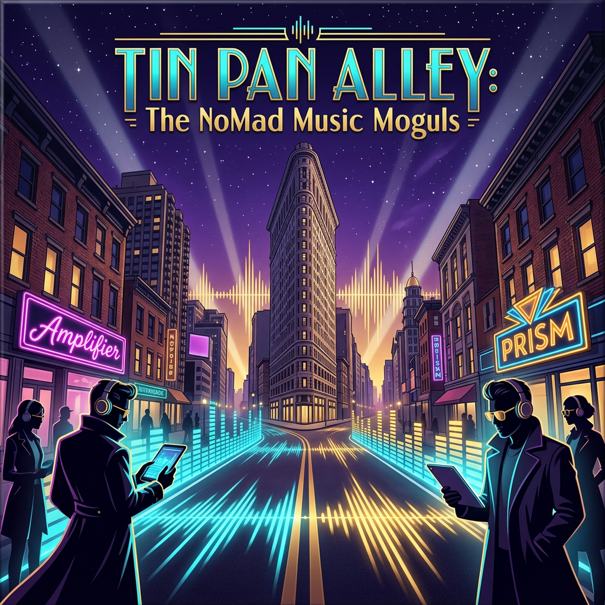

DJ Digitale & Blind Test
Tutti ascoltano i brani simultaneamente e inviano le risposte dal proprio smartphone. Il motore di Fuzzy Matching convalida artisti e titoli anche in caso di piccoli errori di battitura.
"Scopri il talento. Accendi i club. Conquista la scena."
Un gioco da tavolo ibrido ambientato nella scena musicale contemporanea di Manhattan. Gestisci la tua agenzia, investi in Beats (BT), controlla i club storici di NoMad e sfida gli avversari a colpi di blind test orchestrati da The Algorhythm.

Nessun giocatore deve sacrificarsi nel ruolo di moderatore o DJ. Tutti competono dall'inizio alla fine.
Tutti ascoltano i brani simultaneamente e inviano le risposte dal proprio smartphone. Il motore di Fuzzy Matching convalida artisti e titoli anche in caso di piccoli errori di battitura.
Quando organizzi una serata in un club, non scegliere hit troppo scontate né brani introvabili: incassi il massimo solo se indovinano da 1 fino alla metà degli avversari.
Chi resta senza Beats non viene eliminato: attiva il salvagente Scout Freelance e continua a fare punti fino al gran finale dei NoMad Music Awards.

I giocatori si spostano lungo un anello urbano per acquisire le licenze dei club più ambiti, incassare 300 BT di royalty dai concerti altrui e puntare al monopolio di quartiere.
Apri ogni file nel browser, scegli tra la modalità Notturna (Neon) o Ink-Friendly (risparmio inchiostro) e stampa su fogli A4 al 100% di scala.
8 pedine esagonali Impresario, 16 gettoni circolari Controllo Club (Ø 25 mm) e il segnalino Primo Giocatore Headliner.
La valuta ufficiale del gioco impaginata per taglio rapido: tagli da 100 BT (Ciano), 500 BT (Magenta) e 1.000 BT (Oro).
Riferimento rapido al tavolo per ogni giocatore: azioni, costi, tabella Trendsetter, scommesse e alloggiamento gettoni.
Consulta le regole aggiornate (v1.0) in Italiano o in Francese, complete di esempi, formule di punteggio e spareggi.
Mappa vettoriale divisa in 4 quadranti A4 con modalità Ink-Friendly e slot esatti da 25 mm per i gettoni.